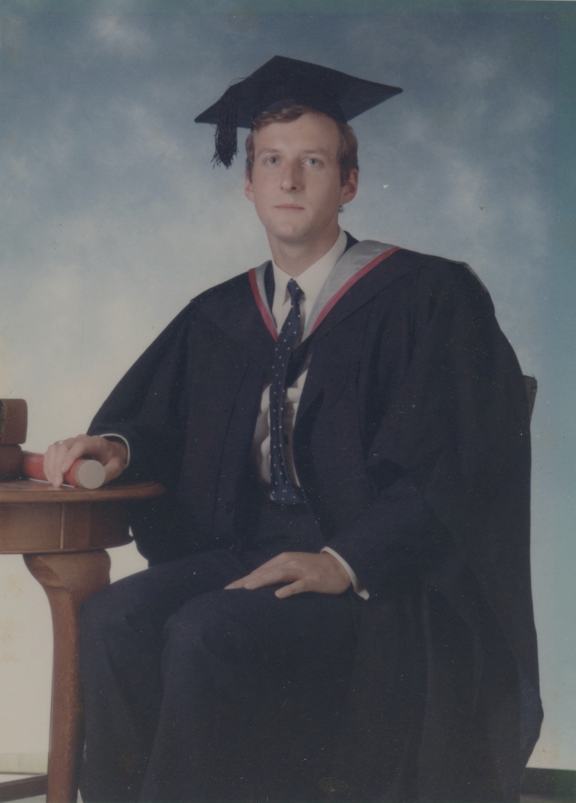

Born 1st June 1948 in North Middlesex hospital, Edmonton.
Married Angela Hinxman on 5th August 1972.
Recollections and reminiscences captured here.
The following photos are in chronological order, although the dates on which most were taken are guesses.
This is me at one year old.
It seems that I had an interest in cars from an early age (about three?).
My heroes were Gene Autry (the singing cowboy) and Tex Ritter.
I guess that Alan is about six months old, which would make me six.
This brings us to 1969 and my graduation from the University of Lancaster.
And in 2001 I was awarded a Doctor of Philosophy.